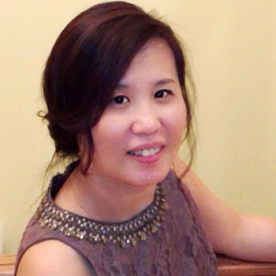

<div class="container">
    <div class="row">
        <div id="speaker-detail" class="col-lg-6 col-lg-offset-3">
            <div class="row">
                <button title="Close (Esc)" type="button" class="mfp-close">×</button>
                <div class="col-md-4 col-lg-4">
                    
                    <br />
                </div>
                <div class="col-md-8 col-lg-8">
                    <h2>Crystal C. Sung, Ph.D., D(ABMLI) 宋晶晶 博士</h2>
                    <h3>Senior Director Scientific, Clinical Lab Sciences</h3>
                    <p>Dr. Sung has over 14 years of industry experience in biologics development. She is the Scientific Director of Clinical Laboratory Sciences at Sanofi. Dr. Sung is directing a CLIA certified lab, which provides clinical laboratory services and scientific expertise to support global R&D projects and drug development through its life cycle (phase 0-IV and post approval commitments).</p>
                    <p>Dr. Sung received a B.S. degree in Medical Technology from National Taiwan University and a Ph.D. degree in Pathology, College of Medicine at the Ohio State University. She completed her post-doctoral clinical research training at Northwestern University Medical School followed by Clinical Immunology Fellowship at Chicago Medical School/Evanston Hospital/Children’s Memorial Hospital. Prior to joining Genzyme, she was an Assistant Professor in Tzu-Chi Medical School, Taiwan.</p>
                    <p>Crystal is a diplomate of American Board of Medical Laboratory Immunology (ABMLI) and currently holds CLIA lab directorship and New York State Department of Public Health certificate of qualification of Laboratory Director in Diagnostic Immunology and Clinical Chemistry.
                    </p>
                </div>
            </div>
        </div>
    </div>
</div>